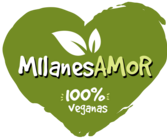

MEDALLONES DE SOJA VEGANOS
sin conservantes - sin aceites agregados- ingredientes sin derivado animal
la magia de lo simple

sin conservantes - sin aceites agregados- ingredientes sin derivado animal
Los alimentos basados en plantas tienen un impacto considerablemente menor sobre nuestro planeta. Cuando dejamos de consumir a los animales, no solo estamos ayudandolos, estamos eliminando todo lo malo de la producción de alimentos: el consumo de agua, la huella de carbono, la presión sobre los terrenos y la deforestación.
HACER MI PEDIDOLa magia esta en vos, el secreto de una rica comida siempre es el amor. Para potenciar el sabor de los alimentos existen diferentes formas de coccion.
¿Cómo cocinar las Milanesamor?